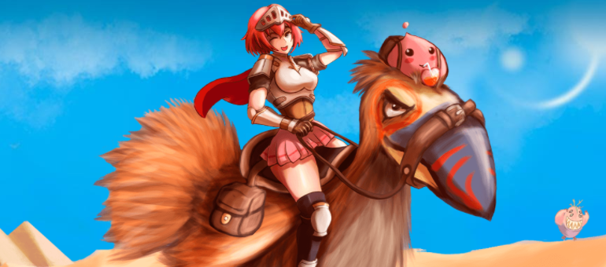

A HISTORIA DO
RAGNARÖK ONLINE

Sobre o jogo
Ragnarök Online é desenvolvido pela empresa sul-coreana Gravity Corporation e inspirado na mitologia nórdica e nas histórias em
quadrinhos escrita por Lee Myung-Jin.
No Brasil, é traduzido e mantido pela Warp Portal Brasil.
Por ser um MMORPG, é possível conectar-se com outros jogadores brasileiro online, criando uma atmosfera de comunidade e competitividade.
Por ser um mundo aberto, Ragnarök Online te dá a liberdade para definir seus objetivos no jogo, com uma série de opções para diversão:

A palavra Ragnarök é profetizada como o "destino final dos deuses", esse evento estaria se aproximando
cada vez mais, onde a "era dos humanos" se iniciaria.
Contudo, os Deuses não estão contentes com seu destino, e enviaram valquírias para procurar aquele que trará o Ragnarök,
evitando que a profecia seja realizada.
Sabendo que o Ragnarök começaria com a morte do Deus Balder, Fenris Fenrir vagou por Midgard em busca do Deus.
Assim que descobre que Balder reencarnou na pele de um jovem com amnésia chamado Chaos, a busca começa a ficar perigosa.
Com a descoberta do poder do Coração de Ymir, pelo Sábio Varmunt, conflitos entre os continentes começaram a surgir.
O coração foi dividido em vários fragmentos e Arunafeltz está em busca de todos os pedaços.
O Sacro Império pretende iniciar uma Guerra Santa contra Rune-Midgard. Esse fanatismo religioso seria o estopim para invocar Surtr,
o Satã Morroc, que havia sido selado por Thanatos.
A ressurreição de Surtr criou uma enorme Fenda Dimensional, ligando Midgard a Ash Vacuum.
Agora, o Ragnarök parece estar prestes a acontecer, mas diferente da profecia, o destino final dos Deuses dependerá de você!